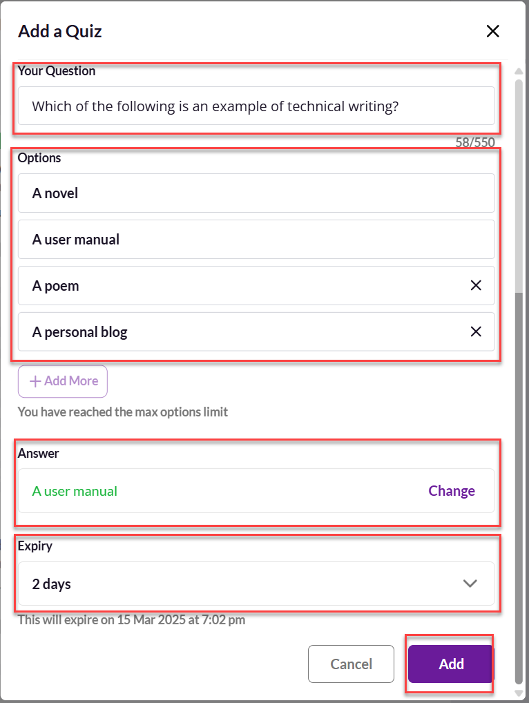
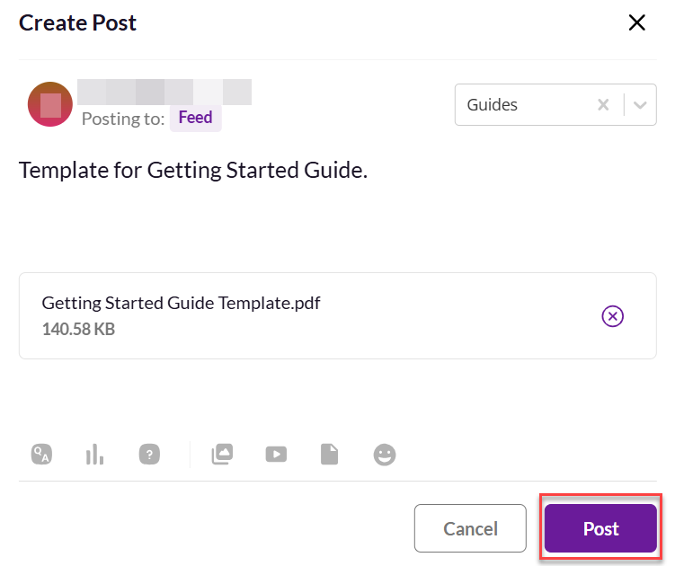

Tech Writer’s Tribe
Quick Start Guide
Version 1.0
Creating a post on Tech Writer’s Tribe is a great way to share knowledge. Writers can share insights or technical expertise with a like-minded community. They can express their thoughts in an informative and engaging way. The content is accessible to the intended audience.
This Quick Start Guide provides insights into different options to create a post on Tech Writer’s Tribe application.
Prerequisites
You can create posts and share interactive content such as,

Your post is visible to other people, allowing them to interact through comments, likes, or responses.
You can create a text post to share information, engage with the community, and gather feedback.
To create,
On your browser or mobile, sign in to the Tech Writer’s Tribe application.
The Feed page appears.

On the Feed page, select one of the following options:

In the Create Post box, perform the following steps:
a. Compose the message.
b. (Optional) Add a tag.
c. Select Post.

The post appears on the Feed page.
You can add a quiz to engage people and test their knowledge.
To add,
On your browser or mobile, sign in to the Tech Writer’s Tribe application.
The Feed page appears.
On the Feed page, select one of the following options:
In the Create Post box, select Add Quiz.

In the Add a Quiz box, perform the following steps:
a. Write your question.
b. Add the options.
Note: You can add upto four options.
c. Select the correct answer from the added options.
d. Set the expiry.
Note: The quiz expires after the given time period.
e. Select Add.

In the Create Post box, perform the following steps:
a. (Optional) Add a tag.
b. Select Post.

The quiz appears on the Feed page.
You can add a poll to gather opinions and feedback from the community.
To add,
On your browser or mobile, sign in to the Tech Writer’s Tribe application.
The Feed page appears.
On the Feed page, select one of the following options:
In the Create Post box, select Add poll.

In the Add a Poll box, perform the following steps:
a. Write your question.
b. Add the options.
Note: You can add upto six options.
c. Set the expiry.
Note: The poll expires after the given time period.
d. Select Add.

In the Create Post box, perform the following steps:
a. (Optional) Add a tag.
b. Select Post.

The poll appears on the Feed page.
You can add a question to seek answers, spark discussions, or gather opinions from the community.
To add,
On your browser or mobile, sign in to the Tech Writer’s Tribe application.
The Feed page appears.
On the Feed page, select one of the following options:
In the Create Post box, select Add question.

In the Add a Question box, perform the following steps:
a. Write your question.
b. Select Add.

In the Create Post box, perform the following steps:
a. (Optional) Add a tag.
b. Select Post.

The question appears on the Feed page.
You can upload and share photos to enhance your posts. You can add images to provide visual context, illustrate ideas, or make your content more engaging for the community.
To add,
On your browser or mobile, sign in to the Tech Writer’s Tribe application.
The Feed page appears.
On the Feed page, select one of the following options:
In the Create Post box, select Add photos.

In the Add Photos box, perform one of the following actions:
Drag and drop the photo and select Add.
Browse your files, select the photo, and then select Add.

In the Create Post box, perform the following steps:
a. (Optional) Compose the message.
b. (Optional) Add a tag.
c. Select Post.

The photo appears on the Feed page.
You can add a video to provide a tutorial, demonstration, or visual explanation, enhancing the overall experience.
To add,
On your browser or mobile, sign in to the Tech Writer’s Tribe application.
The Feed page appears.
On the Feed page, select one of the following options:
In the Create Post box, select Add video.

In the Add Video box, perform one of the following actions:
Drag and drop the video and select Add.
Browse your files, select the video, and then select Add.

In the Create Post box, perform the following steps:
a. (Optional) Compose the message.
b. (Optional) Add a tag.
c. Select Post.

The video appears on the Feed page.
You can upload and share documents to provide detailed information, guides, or resources. Adding a document helps people access important files through your post.
To add,
On your browser or mobile, sign in to the Tech Writer’s Tribe application.
The Feed page appears.
On the Feed page, select one of the following options:
In the Create Post box, select Add documents.

In the Add Documents box, perform one of the following actions:
Drag and drop the document and select Add.
Browse your files, select the document, and then select Add.

In the Create Post box, perform the following steps:
a. (Optional) Compose the message.
b. (Optional) Add a tag.
c. Select Post.

The document appears on the Feed page.